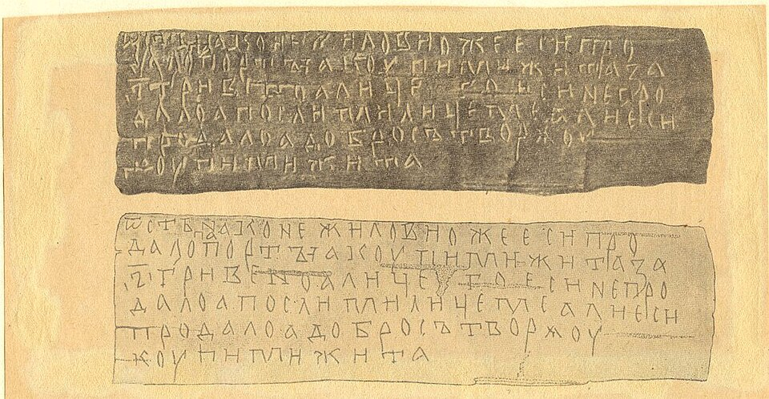
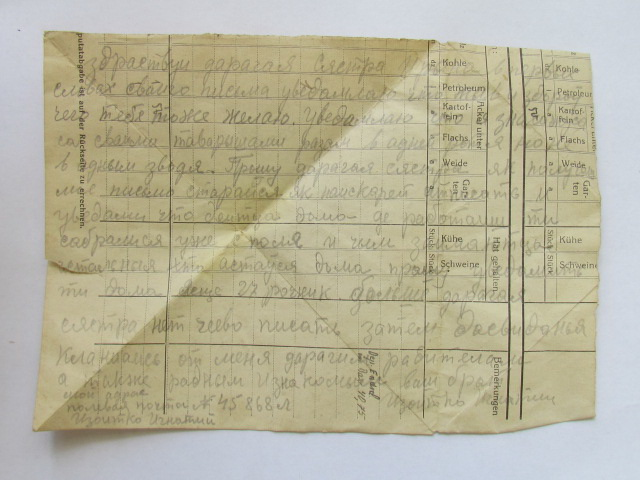
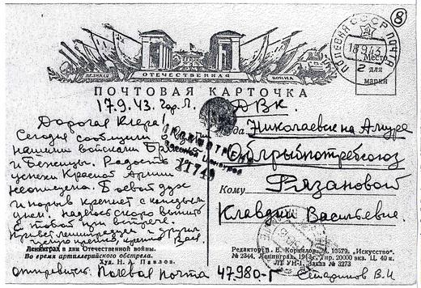

На этой странице представлены подлинные фронтовые письма белорусских солдат времен Великой Отечественной войны и знаменитая Витебская берестяная грамота — первая и старейшая находка средневековой письменности в Беларуси.

Витебская берестяная грамота.
Витебская берестяная грамота — уникальный памятник письменности конца XIII века, найденный in 1959 году при раскопках на площади Свободы в Витебске. Текст содержит обращение Степана к Меху с просьбой купить жито, что дает бесценные сведения о повседневной жизни, торговле и развитию языка жителей древней Беларуси. Более подробно узнать о содержании этого исторического артефакта, расшифровке текста и истории его открытия можно на специализированном историческом сайте.

Фронтовые письма Изоитко Игнатия Николаевича
Изоитко Игнатий Николаевич (1923–1945) — участник Великой Отечественной войны, уроженец деревни Шуневцы Глубокского района. В составе 48-й гвардейской стрелковой дивизии он проявил исключительное мужество в боях наводчиком станкового пулемёта, за что был награждён Орденом Славы III степени. К сожалению, в апреле 1945 года гвардеец скончался от полученных ран в Восточной Пруссии.
знакомиться с подлинной историей его судьбы, а также прочесть трогательные оцифрованные фронтовые письма бойца к родным можно по кнопке ниже.

Разве это всё?
— думаем мы, глядя на скромный фронтовой треугольник, но за его короткими строчками скрывается вся глубина человеческой трагедии и мужества. Услышать живые голоса защитников и прикоснуться к подлинной истории поколения победителей вы можете по кнопке ниже, где собраны уникальные письма и открытки белорусов с фронта.